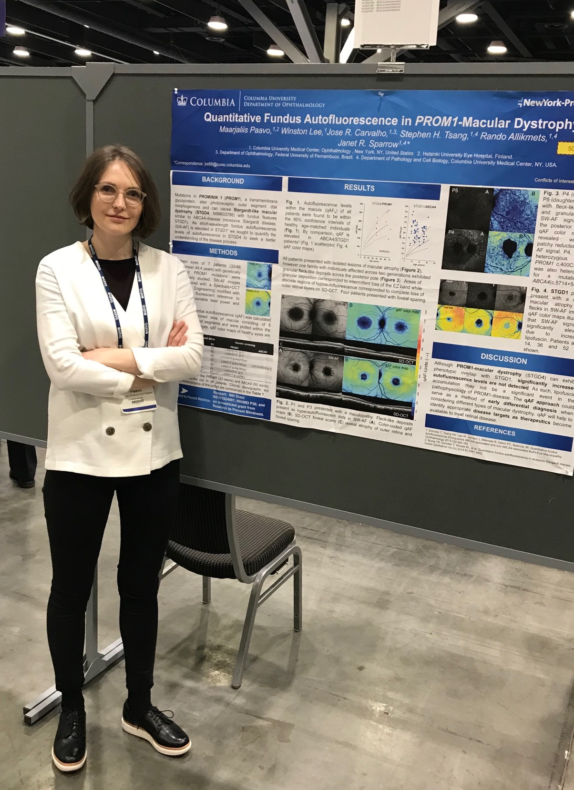

Curriculum Vitae
Curriculum Vitae
Isikuandmed
Nimi: Maarjaliis Paavo
Sünniaeg: 24.01.1986
Aadress: Pihlajatie 24-15 Helsinki
Kontaktandmed: maarjaliis@hotmail.com
Hariduskäik
2005-2011 Arstiteaduskond, Tartu Ülikool
1993-2005 Tartu Miina Härmä Gümnaasium
1992-1993 Tartu Kesklinna Kool
Ametikäik
September 2011- August2014 Silmahaiguste residentuur Tartu Ülikooli Kliinikumi Silmakliinikus
Oktoober 2014 - .. Helsingi Ülikooli Haigla Silmakliinikus
Teadustöö kogemus
September 2009 - September 2010 Uurimustöö pseudoeksfoliatsioonist silmas, Tartu Ülikool, Füsioloogia instituut
Märts 2017 - Juuni 2018
Researchgate profiil
